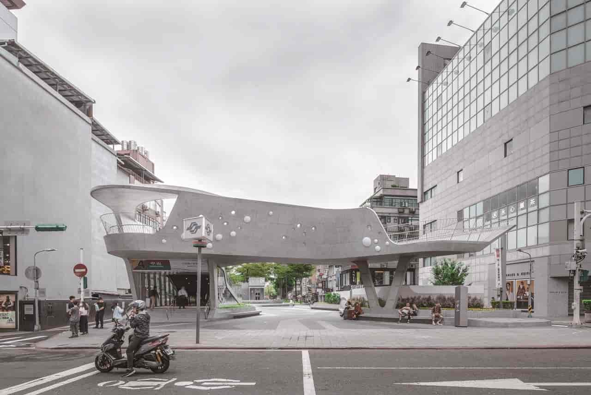
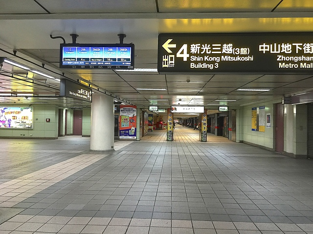

玖拾年代
中山-歷史簡介

車站概要
車站位於南京西路與心中山線形公園（原：捷運線形公園）交叉口，接近承德路、中山北路，建成一帶，淡水線車站位於線型公園下方，松山線車站位於南京西路下方。站名取自現有地名（中山區）、顯著地標（中山市場），該地為著名的南西商圈所在。車站編號的部分，淡水信義線為R11，松山新店線為G14。2018年，夏季台北捷運於部分車站新增日語到站廣播，中山站以訓讀「なかやま Nakayama」廣播。
“車站周圍即為南西商圈，有許多流行商品店家與百貨公司。每逢例假日或下班、下課時間過後，車站附近的地區經常充滿人潮。依據2020年12月資料，中山站每日旅運量約為91,209人次，在台北捷運各站中排行第5名。”

小知識

車站構造
地下交會車站，原淡水線車站設有4座出入口，車站與中山地下街連通，月台設有半高式月台門，松山線通車後新增2座出入口，月台設有全高式月台門。車站樓層
“由於本站出入乘客量高，又是捷運兩線交會車站，以及防止人員蓄意跳軌，本站淡水線月台與其他14個車站增設半高式月台門來保護民眾與行車的安全，已經於2015年5月底啟用；至於2014年通車之松山線月台則採用全高式月台門。”
小知識